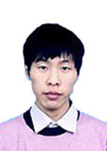

立志从教，用坚强的笔诠释青春的含义
我是来自山东省的免费师范生，我出生在沂水县的一个农村贫苦家庭，父母皆文盲，母亲在我幼时就离家了，因此我成为所谓的“单亲家庭”。但我并没有缺少爱护和生命的支持。在生活上，我很小就包揽了家中事务，例如洗衣做饭、喂猪和放羊等，说实话最初放羊时，羊的劲儿都比我大，把我都拉好远。邻居们都夸我是个懂事的孩子，邻村都知道这些事情，父亲渐渐对我处事的能力也就放心了。在我成长中，我学会了担当；在精神上我更加感激我的父亲。他是个朴实的农民，但他的品性却在生活中渐渐“遗传”给了我：为人要诚恳，不能斤斤计较；为人要上进，不能意志消沉；为人要勤劳，不能无事可干。父亲虽然不识字，但是他懂得爱我、懂得教育我，从小到大他从没动过我一下，但他的教育仍然给我留下深刻的印象，他告诉我：“我不懂的学习，我不识字，不能像其他父母那样教你念书，但是我懂得学习和我们出大力干活是一样的——给人家干活得好好干才能赚来钱，学习要靠自己好好干”。一句“好好干”给我了多少年的奋斗底气，从小学到高中，我的成绩一直名列前茅，初中时几乎每年都是第一名，中考列全县三十多名，理化成绩满分；高中三年，我也一直努力着，保持着班级前三名。正是我的努力，从小学至高中，学校一直都给予我一些减免政策，让我顺利完成学业。高考的时候我考了618分，虽然文综科目没有发挥好，但这仍然是一个较为理想的成绩。在报考时，有老师建议我报考山东大学，正在此时我听说有一种“免费师范生”政策，这是我第一次听到这个名词，我想这就是契机吧，既可以减轻年迈父亲的压力，又可以在将来回报社会，于是，我毅然报考了东北师范大学——听老师说，那是一所很好的师范大学。
2008年8月末，怀揣着东北师大录取通知书的我，在叔叔的陪伴下来到了长春，第一次进校园，我就见到了自己学院的辅导员——乔颖老师，她真的很热心，为我办理了绿色通道。很巧合的是，从我加入爱心使者团后，我参与了2009届、2010届两届新生入学的绿色通道工作。
入学以来，我很注重学习入大学以来勤奋学习，取得优异成绩，三年连续获得“校长奖学金”和“优秀学生”称号，三年总成绩按平均分第二（2/106），按学分绩点第三（3/106）。对课程论文我尽心写作，其中《<历史哲学导论>读书笔记——内容简介及对历史学的一点思考》为“历史通论”课程优秀论文，已被推选列在历史文化学院亚洲文明院“读书与评论”栏目（文、史、哲所有专业本科年级唯一一篇课程论文展示）。在课余时间，我也参与了东北师范大学2010年度大学生科研基金项目“人性大爆发——欧洲黑死病时期社会心态及其影响的考察”，成为其中的骨干。在获第三届“家曦杯”东北师范大学课外学术科技作品竞赛中我的论文《古希腊人的宗教观念——以希罗多德<历史>为参考》获“优秀奖”。此外，我的论文《古希腊人战争中的宗教因素》也发表在国家级教育社科综合类学术期刊《神州》（2011年第9期）上。
同时另一方面也希望摆脱自己性格内向、不善言谈的不利之处，于是加入了学校的很多社团，有爱心使者团、E翔工作室、化学学院的园丁社、《东师青年》编辑部。在这里我认识了很多新朋友，也收获了一些新知识，特别是在E翔工作室我学会了很多关于电脑和编程的知识，结识了众多有理想有能力的学长学姐。在爱心使者团我也认识了许多“爱心使者”，他们为全校的受资助对象提供生活和学习等方面的帮助，后来我还成为爱心学校的爱心教师以及爱心超市的经理。日常和暑期的支教活动，以及在第六届经理期间所做的工作（爱心超市日常运行，组织过冬季、夏季两次全校衣物募捐活动，参与了2010年新生“绿色通道”工作和2011年慰问全校资助对象的元旦联欢活动），对我来说锻炼了许多。在2011年3月，我又加入厚普公益学校，任特长组组长一职。
在大学的三年多的时间里，我真的成长了许多，我不再内向，我可以随时让一个人在我的“幽默”方式下尽情欢笑；我不再羸弱，我可以像李小龙那样耍着双节棍；同样我也不再幼稚，我必须像一个教师一样要求自己，恰巧利用自己的书法特长与众多学生一起分享古老的书写艺术。
自从2010年8开始，我开始了爱心支教历程： 2010年8月随爱心使者团支教于榆树市刘家镇第一中学，被评为“优秀爱心教师”； 2010年秋季学期，参与爱心学校支教于东方广场小学、长春市第74中学，并被评为“优秀爱心教师”，获“德育”主题班会设计二等奖，从而得到师生的认可与好评，获表扬信一封。2011年春季学期参与厚普公益学校，担任特长组组长一职，并支教于长春龙子心学校，并获“优秀教师”称号。2011年8月第二次随爱心使者团支教于榆树市刘家镇第一中学，亦被评为“优秀爱心教师”。
在支教过程中，收获的不仅是教师技能的提高，更是对孩子的不舍——每次支教离开，都有孩子们恋恋不舍的泪水。我知道自己一定会成为一位不会辜负他们的人民教师。
入学以来，我很注重学习入大学以来勤奋学习，取得优异成绩，三年连续获得“校长奖学金”和“优秀学生”称号，三年总成绩按平均分第二（2/106），按学分绩点第三（3/106）。对课程论文我尽心写作，其中《<历史哲学导论>读书笔记——内容简介及对历史学的一点思考》为“历史通论”课程优秀论文，已被推选列在历史文化学院亚洲文明院“读书与评论”栏目（文、史、哲所有专业本科年级唯一一篇课程论文展示）。在课余时间，我也参与了东北师范大学2010年度大学生科研基金项目“人性大爆发——欧洲黑死病时期社会心态及其影响的考察”，成为其中的骨干。在获第三届“家曦杯”东北师范大学课外学术科技作品竞赛中我的论文《古希腊人的宗教观念——以希罗多德<历史>为参考》获“优秀奖”。此外，我的论文《古希腊人战争中的宗教因素》也发表在国家级教育社科综合类学术期刊《神州》（2011年第9期）上。
同时另一方面也希望摆脱自己性格内向、不善言谈的不利之处，于是加入了学校的很多社团，有爱心使者团、E翔工作室、化学学院的园丁社、《东师青年》编辑部。在这里我认识了很多新朋友，也收获了一些新知识，特别是在E翔工作室我学会了很多关于电脑和编程的知识，结识了众多有理想有能力的学长学姐。在爱心使者团我也认识了许多“爱心使者”，他们为全校的受资助对象提供生活和学习等方面的帮助，后来我还成为爱心学校的爱心教师以及爱心超市的经理。日常和暑期的支教活动，以及在第六届经理期间所做的工作（爱心超市日常运行，组织过冬季、夏季两次全校衣物募捐活动，参与了2010年新生“绿色通道”工作和2011年慰问全校资助对象的元旦联欢活动），对我来说锻炼了许多。在2011年3月，我又加入厚普公益学校，任特长组组长一职。
在大学的三年多的时间里，我真的成长了许多，我不再内向，我可以随时让一个人在我的“幽默”方式下尽情欢笑；我不再羸弱，我可以像李小龙那样耍着双节棍；同样我也不再幼稚，我必须像一个教师一样要求自己，恰巧利用自己的书法特长与众多学生一起分享古老的书写艺术。
自从2010年8开始，我开始了爱心支教历程： 2010年8月随爱心使者团支教于榆树市刘家镇第一中学，被评为“优秀爱心教师”； 2010年秋季学期，参与爱心学校支教于东方广场小学、长春市第74中学，并被评为“优秀爱心教师”，获“德育”主题班会设计二等奖，从而得到师生的认可与好评，获表扬信一封。2011年春季学期参与厚普公益学校，担任特长组组长一职，并支教于长春龙子心学校，并获“优秀教师”称号。2011年8月第二次随爱心使者团支教于榆树市刘家镇第一中学，亦被评为“优秀爱心教师”。
在支教过程中，收获的不仅是教师技能的提高，更是对孩子的不舍——每次支教离开，都有孩子们恋恋不舍的泪水。我知道自己一定会成为一位不会辜负他们的人民教师。